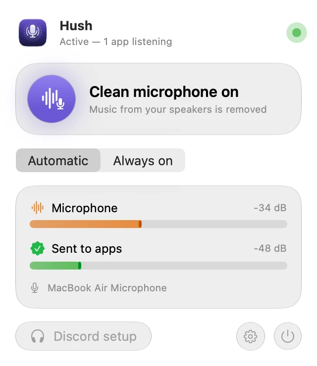
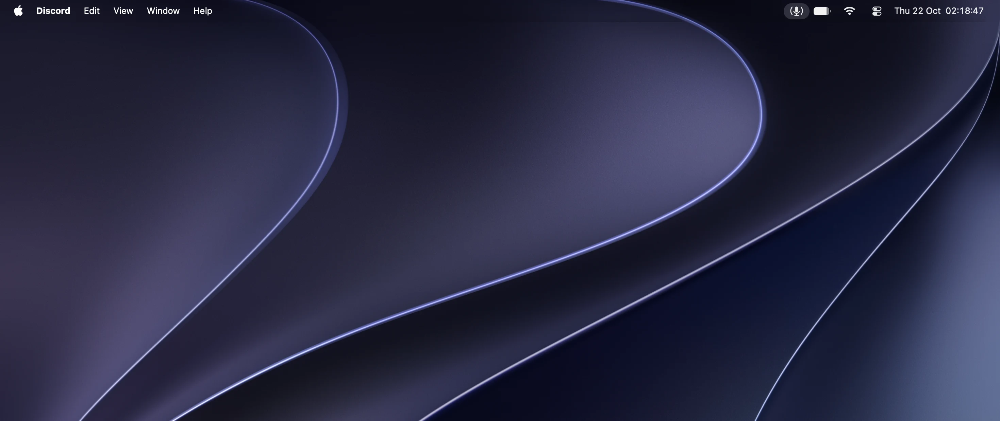
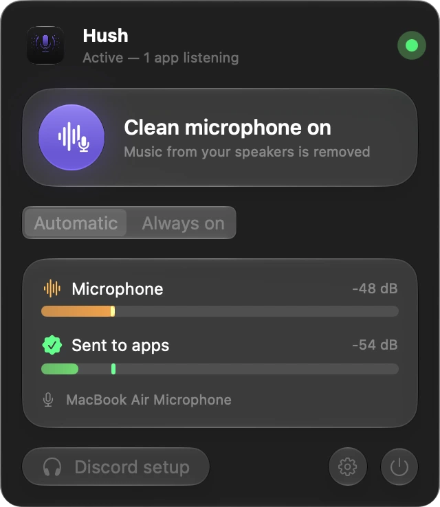

Lives in your menu bar.
Two meters show what your microphone hears and what apps receive. Play music and watch the first one move while the second stays quiet.

Hush for Mac
A clean microphone for Discord, Zoom, Meet and OBS. Hush runs the voice processing FaceTime uses, so people hear you and not what your Mac is playing.
Free and open source · macOS 14 or later


Listen
Press play, then turn Hush on and off while it plays.
Simulation based on measurements of the real app.Music: “Be Chillin” by Alexander Nakarada
How it works
Two meters show what your microphone hears and what apps receive. Play music and watch the first one move while the second stays quiet.

The same Apple processing that keeps FaceTime calls clean removes all of your Mac's sound from the mic.
Hush adds a microphone called “Hush Microphone”. Pick it in any app that lets you choose an input.
In automatic mode, Hush runs only while an app listens to Hush Microphone. The rest of the time, your Mac sounds normal.
Hush adjusts your level only while you speak, so soft and loud voices come out the same and background noise never gets boosted.
Full measurement details available on GitHub.
Setup
Drag Hush into Applications and open it. The welcome screens take care of the rest.
Hush isn't notarized by Apple yet, so macOS warns you on first launch. To open it:
xattr -dr com.apple.quarantine /Applications/Hush.appNo. Audio is processed live, in memory. The only recording is the before/after test in the welcome screens, kept in a local temporary file.
About 80 ms in total: Apple's processing adds about 65 ms, Hush about 15 ms. People on the other end don't notice it in conversation.
macOS lowers other audio whenever voice processing runs. Hush asks for the smallest reduction Apple allows, about 8 dB instead of the default 30 dB. In automatic mode this only happens during calls.
They work. Hush follows output changes on its own.
In Hush, open Settings and click Uninstall Virtual Microphone, then move Hush to the Trash.